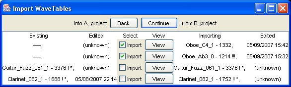

|
Mobileer Instrument Editor
CONFIDENTIAL and PROPRIETARY - © 2002-6 Mobileer Inc.
|
Import WaveTables, WaveSets, and Instruments from Another Project.
When to Use This Feature
If you only have one Project then you do not need this feature. If you have multiple Projects then you may want to bring WaveTables, WaveSets, or Instruments from one Project into another. This feature will help you do that.
When you import a project you copy WaveTables, WaveSets, or Instruments from the "imported" Project into the "current" Project. The "imported" Project is not modified.
Getting Ready
- Decide which Project you want to be the "current" Project. Copy the "imported" Project to the same computer or file system.
- Make a backup of the file in the Current Project.
- Launch the Editor.
- If you are not already editing the Current Project then "Open Project..." to open the Current Project. (Then Quit and restart the Editor.)
Importing
- Select "Import Project..." from the File Menu.
- Browse to the Project file for the Imported Project.
-
Click the Continue button until you see something like the "Import WaveTables" window below. We import the WaveTables first because WaveTables are not dependant on WaveSets or Instruments.

- The left side shows the WaveTables in the Current Project. The right side shows the WaveTables that can be imported from the ImportProject. If the left side shows "---" then that means that the Import Project contains a new WaveTable that does not exist in the Current Project. You can safely import them by checking the "Import" box.
- If names are shown on both sides then it means that the importer found a corresponding WaveTable in both Projects. You will need to decide whether to use the one in the Current Project or the one in the Import Project. If they were edited after V2.16 then the date they were edited will be shown. You can click the "View" button to see details of each WaveTable, which may help you decide. If you do Import then the Current WaveTable will be overwritten by the Import WaveTable. You can always come back and Import again so when in doubt don't Import.
- When you have made your choices click "Continue". The selected WaveTables will be Imported and you will then be able to import WaveSets.